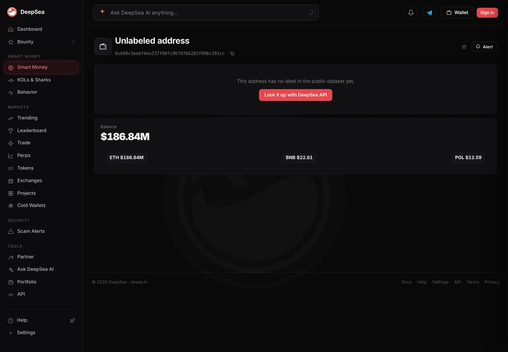

DeepSea's top shark seller, $55.5 million in a day, is an exchange wallet Etherscan labels Binance 151
The top address in DeepSea's 24-hour shark table logged $55.5 million of sales in 1,220 trades. Etherscan labels it Binance 151, an exchange wallet holding stablecoins, tokenized gold and 18,208 ETH. The data does not show why the funds moved.
Key points
- Etherscan labels the Ethereum address 0x690c...91cc as "Binance 151", with the labels Binance, Exchange and Deposit Address. At its snapshot it held 18,208 ETH ($30.29 million) and more than $91.2 million in other tokens.
- DeepSea's 24-hour table, built at 6:36 a.m. ET on November 28, 2026, lists the same address as an unlabeled shark with $55,512,851 counted as sold and $19,752,932 as bought, in 1,220 trades.
- That one address makes up about 43% of the $130.3 million sold by the 60 wallets in DeepSea's list. Exchange wallets move funds for many users, so these figures do not show one trader's view of the market.
 What DeepSea's data shows
What DeepSea's data shows
DeepSea's 24-hour flow table, built at 6:36 a.m. ET on November 28, ranks 60 shark wallets. The top seller, on Ethereum, is 0x690c...91cc: $55,512,851 sold and $19,752,932 bought in 1,220 trades, across all tokens. The next biggest seller, on BNB Chain, sold $10,988,522.
DeepSea's wallet page shows the address as unlabeled, with a balance of $186.84 million at 6:54 a.m. ET, almost all of it on Ethereum.

Data: DeepSea (desea.io), checked November 28, 2026, 6:36 a.m. ET.
Etherscan names the wallet
Block explorer Etherscan gives the address the name tag Binance 151, with the labels Binance, Exchange and Deposit Address. It is a regular wallet, not a smart contract. Etherscan says it was first funded 27 days ago.
An exchange wallet moves money for the exchange and its users. Its transfers and swaps can be routine operations covering many customers at once, so its "sales" in a tracker are not one trader's bet on the price.
The latest transactions on the page were sent minutes apart. Most went to an address Etherscan labels Binance 129, and several moved USDT. We do not know what each transfer was for.
What the wallet holds
Etherscan's snapshot, taken at 7:46 p.m. ET on November 27, showed 18,208.2 ETH, worth $30.29 million, plus more than $91.2 million in over 201 tokens. The largest were:
- RLUSD, Ripple's dollar stablecoin: 10,489,424, about $10.49 million
- EURI, a euro stablecoin: 8,946,389, about $9.78 million
- USDe: 7,759,908, about $7.76 million
- XAUt, Tether's gold token: 1,939.7, about $7.09 million
- USD1: 6,180,532, about $6.18 million
That adds up to about $121.5 million on Etherscan, against $186.84 million on DeepSea's page. The two were read at different times and value tokens in different ways, and we report both as shown.

Check the label before the number
The market fell overnight. Bitcoin was down 4.2% at $59,159 and ether down 4.9% at $1,645.01 at about 6:41 a.m. ET, CoinGecko shows. On days like this, big sell totals in whale trackers draw attention. The largest one here belongs to an exchange wallet. The data shows money moving through a Binance address; it does not show Binance or anyone else selling to bet on the price, and it does not link these flows to the drop.
LC Insight analysis
This section is our reading of the facts above, not a statement of fact.
- We think readers should check labels before reading a big whale sale as panic. The top seller in this table is an exchange wallet, by Etherscan's label.
- Without that address, the other 59 wallets in DeepSea's list sold about $74.8 million in 24 hours, a smaller and more useful picture of large private traders.
- Exchange wallets can move funds for many users at once, so their flows are best read as traffic through the exchange, not as a signal of direction.
What's next
- Whether DeepSea adds an exchange label to 0x690c...91cc.
- The wallet's 18,208 ETH balance on Etherscan.
- Which private wallets lead DeepSea's sell list once exchange wallets are set aside.
Disclaimer. This article is based on public information and the sources listed below as of the update time shown. It is for information only and is not investment, legal or tax advice. Figures may change as companies and authorities publish new data.
Sources
- Etherscan, address 0x690c...91cc, name tag Binance 151 (snapshot November 27, 2026, 7:46 p.m. ET, read November 28)
- DeepSea, 24-hour shark flow table (built November 28, 2026, 6:36 a.m. ET)
- DeepSea, wallet page for 0x690c...91cc (read November 28, 2026, 6:54 a.m. ET)
- CoinGecko, Bitcoin price (read November 28, 2026, 6:41 a.m. ET)
- CoinGecko, Ethereum price (read November 28, 2026, 6:41 a.m. ET)